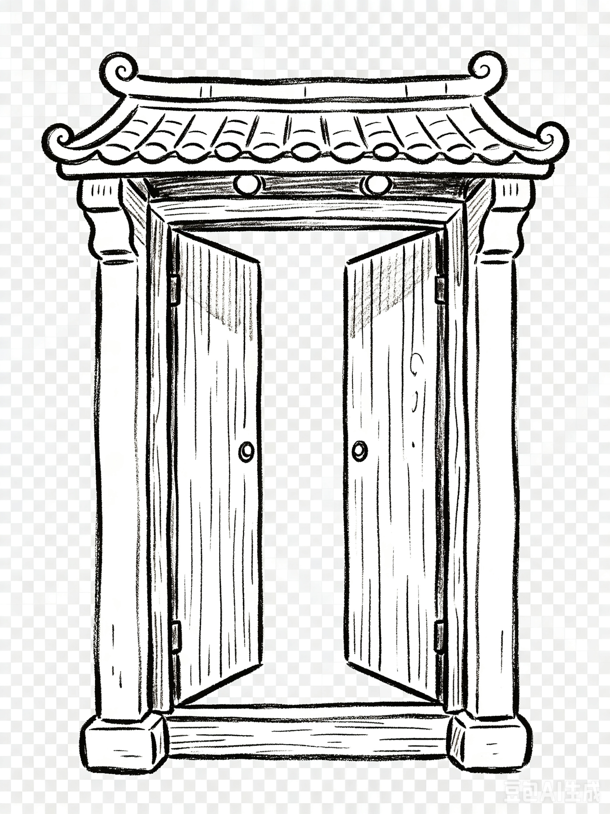
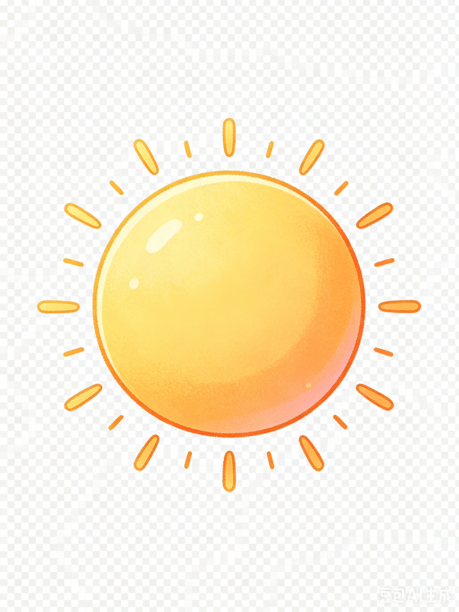
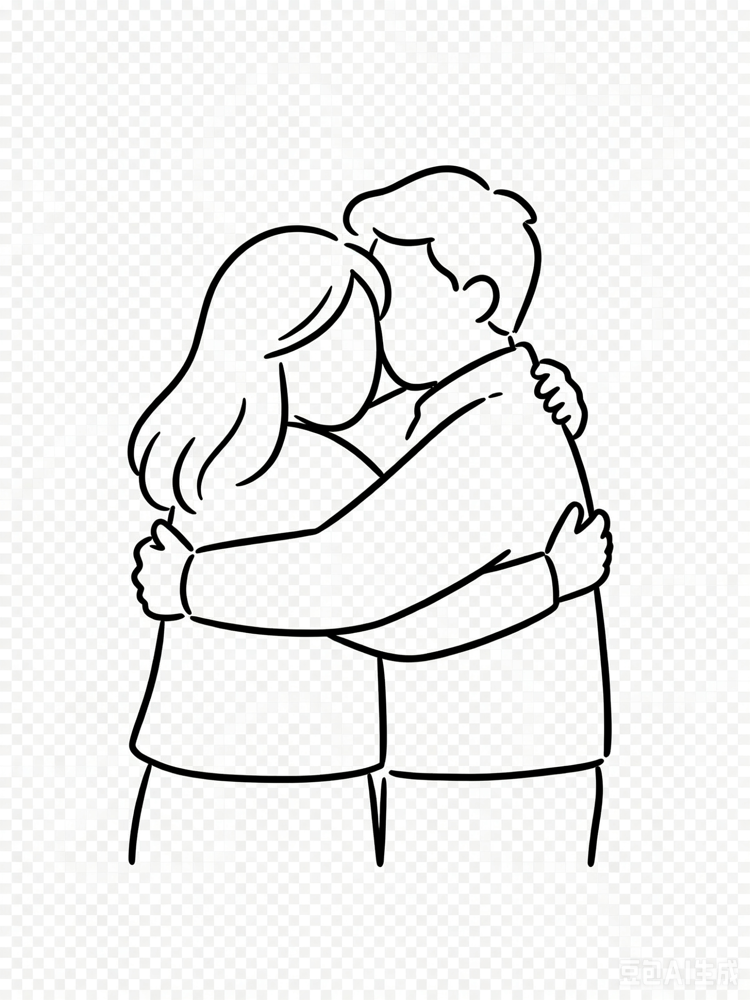
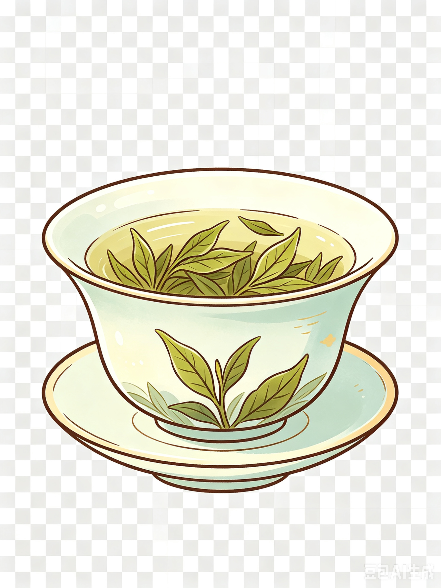

戴上耳机，用音乐丈量中国大地
每一首歌都是一个目的地。点击城市卡片，开启音乐文化探索之旅。
共 5 站 · 跨越南北北京是中国的首都，有古老的故宫、长城，也有现代化的高楼大厦。中国人非常热情，用"我家大门常打开"来表达欢迎全世界朋友的诚意。《北京欢迎你》是2008年北京奥运会的主题歌，唱出了中国人开放、自信的精神。




① 填空：有梦想谁都 ______，有勇气就会有 ______。
② 改写："让我们都加油去超越自己" → 用"谁都"改写：________________。
③ 判断："有梦想谁都了不起"的意思是"只有特别的人才能实现梦想"。（ 对 / 错 ）
为《中国文化手册》制作封面卡片，用汉语写下欢迎语，配上插图。
📋 步骤：① 用短句回答"你用什么欢迎朋友？" → ② 写一句固定句式"______ 欢迎你！______ 为你 ______。" → ③ 选择图标装饰（灯笼/茶杯/太阳/笑脸/城市） → ④ 小组互评：内容 ★ 书写 ★ 设计 ★
成都是四川省的省会，以"慢生活"著称。这里有大熊猫基地、美味的火锅、热闹的茶馆和悠闲的街头。赵雷的《成都》唱出了这座城市独特的温柔与浪漫——在夜晚的街头慢慢走，感受当下的美好。
画一张从玉林路到小酒馆的步行路线图，标注沿途的店铺、风景，用中文写简短的介绍。
📋 步骤：① 在地图上找到玉林路 → ② 标注3-5个"值得停留"的地点 → ③ 用"走到……的尽头，坐在……的门口"句式写路线说明 → ④ 向同学展示路线，说说你为什么选择这些地点
厦门是一座美丽的海滨城市，位于福建省，对面就是台湾的澎湖列岛。《外婆的澎湖湾》虽然歌名指的是澎湖，但它描绘的南方海岛风情——阳光、沙滩、海浪、仙人掌——与厦门的气质完美契合。这首歌充满了童年的纯真与温暖的回忆。
收集或画出代表你童年记忆的3-5件物品（照片/玩具/零食），用中文写标签，向同学分享你的童年故事。
📋 步骤：① 用"阳光、______、______、______"的格式列出你的童年关键词 → ② 选一件最重要的东西，用"有着……"句式写一句话 → ③ 制作一个实体或电子"记忆盒"（可以是纸盒或PPT） → ④ 3分钟小组分享
云南位于中国西南部，名字意为"彩云之南"，是中国少数民族最多的省份。这里有丽江古城、大理洱海、玉龙雪山和西双版纳的热带雨林。徐千雅的《彩云之南》把云南的美景一一唱出——孔雀飞去、玉龙雪山、秀色丽江……让人仿佛置身彩云之间。
选一个云南的景点（丽江、大理、泸沽湖等），设计一张旅行明信片，背面用中文写一段风景介绍。
📋 步骤：① 从歌词中选一个地点（玉龙雪山/蝴蝶泉/泸沽湖/丽江） → ② 用"______在______"句式写一句画面描写 → ③ 用"______和______"的四字格写一句总结语 → ④ 画一张明信片正面图，背面写中文，向同学展示
这是我们的最后一站——不是某一个城市，而是你的内心之旅。张韶涵的《隐形的翅膀》是中国最经典的一首励志歌曲，歌词中的"隐形的翅膀"是一个比喻：每个人都有一双看不见的翅膀，那就是你的梦想和勇气。学到这里，你已经能用中文表达自己的想法了。让我们学会怎样说出自己的梦想和勇气。
这是课程的总结项目。用学到的词汇和句式，制作一张"梦想勇气卡"：你的梦想是什么？你的"隐形翅膀"是什么？你怎样用勇气面对困难？
📋 步骤：① 用"我的梦想是……"写1-2句介绍你的梦想 → ② 用"我的隐形翅膀是……"写一个比喻句（如：朋友的支持 / 家人的鼓励 / 自己的坚持） → ③ 用"每一次……我都……"句式写一句你克服困难的故事 → ④ 用"我终于……"句式写一句你为自己的进步感到骄傲的话 → ⑤ 装饰卡片，在全班面前做3分钟的"我的梦想与勇气"主题演讲